Project overview
Designed and built the Innovate ADHD digital platform from 0–1, improving access to ADHD assessment and support in the UK. The project focused on simplifying complex healthcare journeys and making information more accessible for neurodivergent users. By combining clear information architecture with engaging, low-cognitive-load interactions, the platform supports users from awareness through to booking and care.
My contributions — as the product manager
- Led end-to-end UX and service design, from research to delivery
- Translated complex clinical information into clear, user-friendly content
- Designed user journeys to reduce drop-off and improve engagement
- Collaborated with clinical and development teams to align design with real service delivery
This project explores how design can better support people with ADHD in managing focus and daily tasks, where most existing tools tend to be too complex or not aligned with how attention actually works in real life.
I led the product design from 0 to 1, including user research, behavioural insight, interaction design and UI, while also working closely with engineers on implementation, including AI-driven prototyping (vibe coding) and refining how the product translated into a working system. I was responsible for defining the product direction and ensuring the visual and interaction design could be effectively shipped and scaled.
Alongside product work, I also contributed to marketing and early growth, helping shape how the product was positioned and communicated. Before I left the project, it had already reached and maintained an active user base.
The final outcome is a simple, behaviourally informed product that reduces friction, supports task initiation, and helps users stay more consistently engaged in their daily activities.
1 — The situation: a form almost nobody with ADHD finished
People with ADHD often struggle to complete traditional assessments due to attention challenges, cognitive overload and long, text-heavy questionnaires. This leads to:
- High drop-off rates during screening
- Incomplete or inaccurate self-assessments
- Delayed access to diagnosis and care
The key challenge was: how might we redesign essential clinical questionnaires so users can actually complete them?
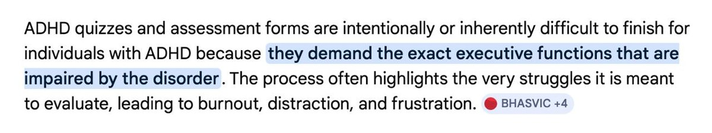
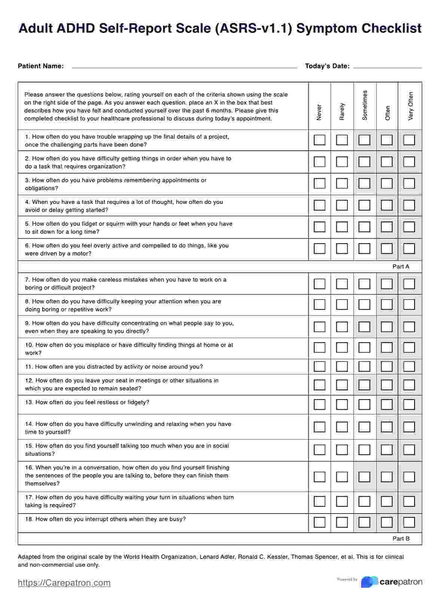
2 — My solution: gamification
I redesigned traditional ADHD assessments that were often long, repetitive, and difficult for users to complete, which led to drop-offs and low engagement. Many users felt overwhelmed by the length and cognitive effort required, which reduced the reliability of completion.
I broke the assessment into bite-sized, gamified modules that felt engaging and low-pressure while preserving clinical accuracy — turning heavy, repetitive text into an interaction that felt more like checking in with yourself than sitting an exam. This improved user engagement and significantly increased completion and conversion rates, without compromising the validity of the assessment.
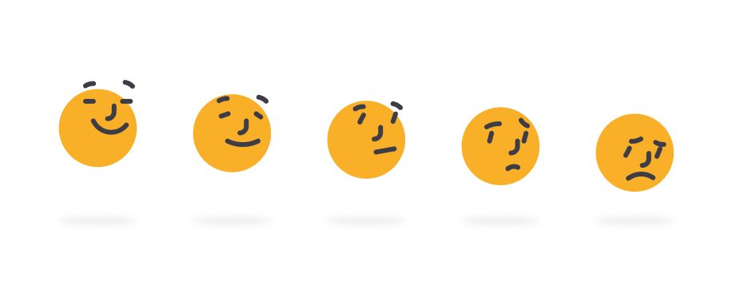
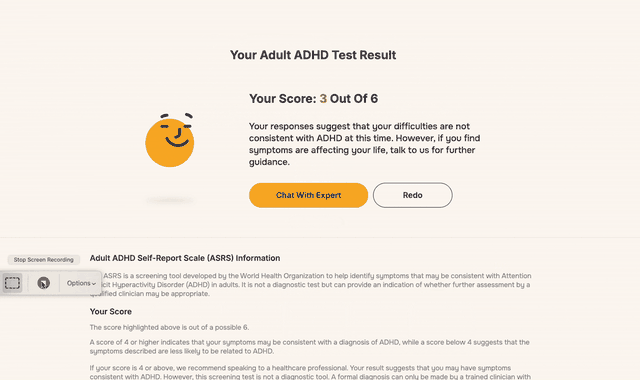
AI in the workflow — a tool chain, not a gimmick
The two-week concept-to-live timeline only worked because AI sat inside a deliberate pipeline, not as one-off novelty: prototype fast, build with AI in the loop, use AI again to check the work before real users ever saw it, then stay hands-on in the code myself.
AI-driven build & delivery — I led an AI-driven workflow, using vibe coding alongside Figma prototypes to work closely with developers, rapidly translating ideas into functional features. This allowed us to iterate quickly and move from concept to a live product within just two weeks.
AI-enabled validation — I then introduced AI as a second layer of validation, using it to test usability, interaction clarity, and overall user experience. This helped ensure the product was not only functional, but genuinely intuitive and user-friendly before reaching real users.
AI-assisted implementation — I used Claude to directly refine and modify developer-written code, enabling me to stay hands-on beyond design and ensure the final implementation precisely matched the intended user experience.
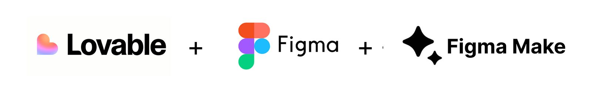
3 — Updated the design system: designing for ADHD cognition
Attention-focused design for ADHD users — I designed the platform specifically around ADHD user needs, creating a more focus-friendly and cognitively accessible interface. This included larger, more readable typography, a clear and guided structure, reduced distractions such as unnecessary animations, and a strong visual hierarchy to help users stay on track. Compared with conventional UI patterns, these choices intentionally prioritise clarity and attention over density and aesthetics.
These design decisions were grounded in accessibility and cognitive principles, aiming to reduce cognitive load and better support sustained attention. The overall experience was also validated through accessibility checks, including contrast and readability standards, ensuring it aligns with established guidelines while being genuinely usable for this user group.
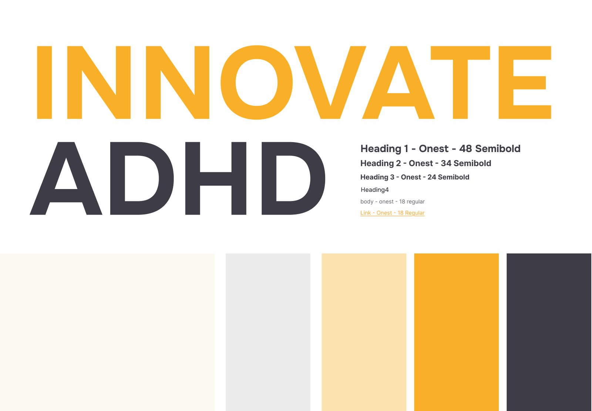

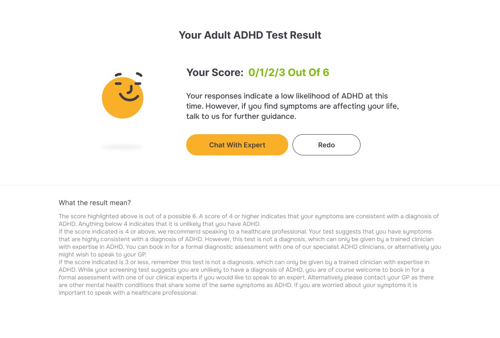
4 — Results: completion, conversion, engagement
Based on early-stage analytics and platform performance: the product achieved 1.3K+ page views shortly after launch without any marketing spend, indicating strong initial interest; reached 600+ unique users, validating early user acquisition; and maintained an 82%+ engagement rate, suggesting users were actively interacting with the content rather than bouncing off it. Average engagement depth showed users weren't just visiting — they were staying and exploring the platform.
Before I left, the product had already reached and maintained an active user base, with improved completion and conversion compared to the original assessment flow.
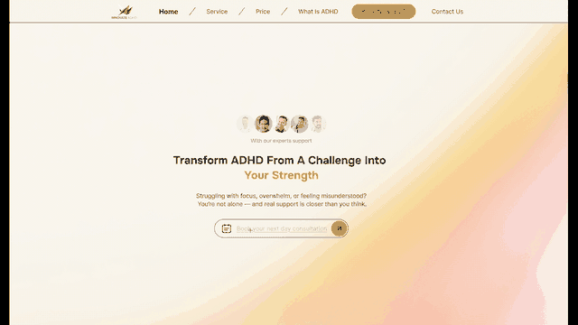
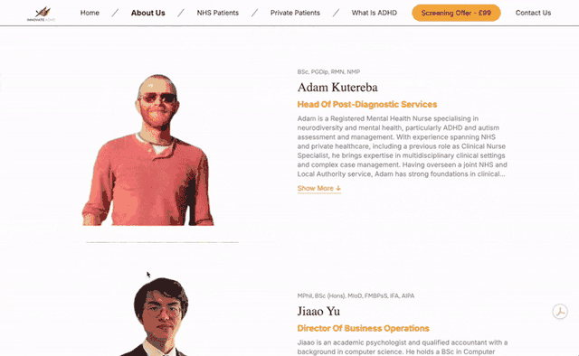
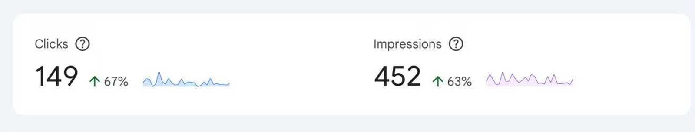
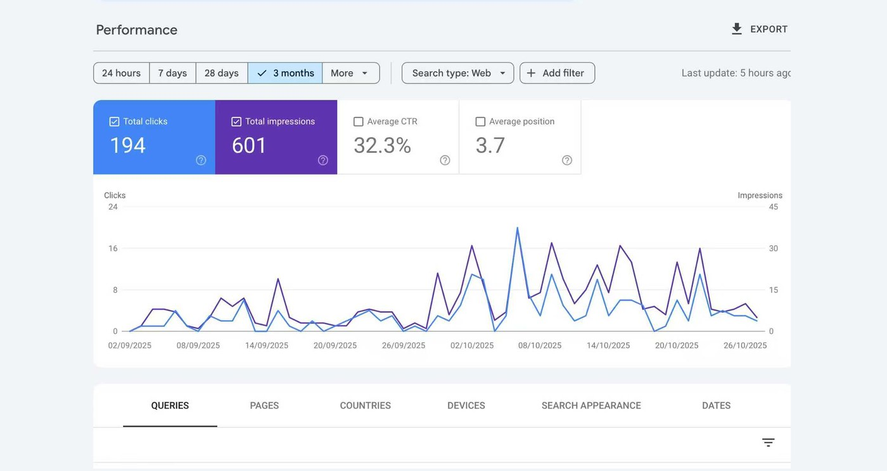